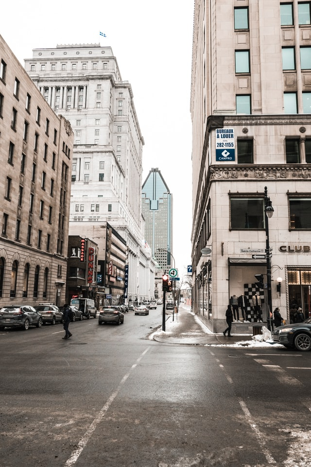

Montreal is the second-most populous city in Canada and most populous city in the Canadian province of Quebec. Founded in 1642 as Ville-Marie, or "City of Mary", it is named after Mount Royal, the triple-peaked hill in the heart of the city. The city is centred on the Island of Montreal, which got its name from the same origin as the city, and a few much smaller peripheral islands, the largest of which is Île Bizard. The city is situated 196 km (122 mi) east of the national capital Ottawa, and 258 km (160 mi) south-west of the provincial capital, Quebec City.
In 2016, the city had a population of 1,704,694, with a population of 1,942,247 in the urban agglomeration, including all of the other municipalities on the Island of Montreal. The broader metropolitan area had a population of 4,098,247. French is the city's official language and in 2016 was the main home language of 49.8% of the population, while English was spoken by 22.8% at home, and 18.3% spoke other languages (multi-language responses were excluded from these figures). In the larger Montreal Census Metropolitan Area, 65.8% of the population spoke French at home, compared to 15.3% who spoke English. Montreal is one of the most bilingual cities in Quebec and Canada, with over 59% of the population able to speak both English and French. Montreal is the second-largest primarily French-speaking city in the developed world, after Paris.
Historically the commercial capital of Canada, Montreal was surpassed in population and in economic strength by Toronto in the 1970s. It remains an important centre of commerce, aerospace, transport, finance, pharmaceuticals, technology, design, education, art, culture, tourism, food, fashion, video game development, film, and world affairs. Montreal has the second-highest number of consulates in North America, serves as the location of the headquarters of the International Civil Aviation Organization, and was named a UNESCO City of Design in 2006. In 2017, Montreal was ranked the 12th-most liveable city in the world by the Economist Intelligence Unit in its annual Global Liveability Ranking, and the best city in the world to be a university student in the QS World University Rankings.
Montreal has hosted multiple international conferences and events, including the 1967 International and Universal Exposition and the 1976 Summer Olympics. It is the only Canadian city to have held the quadrennial Summer Olympics. In 2018, Montreal was ranked as an Alpha− world city. As of 1978 the city hosts the Canadian Grand Prix of Formula One, the Montreal International Jazz Festival and the Just for Laughs festival. It is also home to ice hockey team Montreal Canadiens, the franchise with the most Stanley Cup wins.
